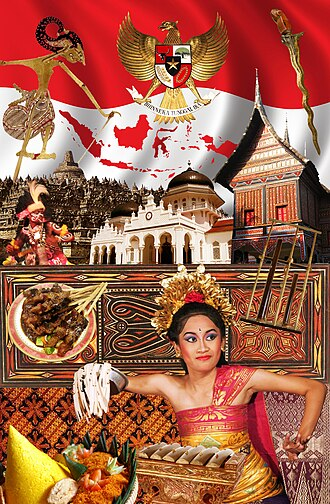

Legenda Nusantara
Mitologi Indonesia adalah istilah untuk menyebutkan mitologi di Indonesia (ya iya lah bang). Mitologi Indonesia biasanya dipenuhi oleh nilai-nilai dan petuah kehidupan. Sebagai mitologi, sangatlah umum kalau diceritakan dari mulut ke mulut. Mengenai proses penyampaiannya, sudah pasti akan ada beberapa versi dari satu mitologi. Umumnya mitologi Indonesia memuat kisah keadaan awal dunia, kisah dewa-dewi dan makhluk supranatural, dan kisah asal mula sesuatu.
Dengan Indonesia sebagai pusat perdangangan pada masa lalu, pedagang Buddha dan Hindu ikut menyebarkan agamanya. Dalam perdagangan dan penyebaran agama inilah Indonesia mengadaptasi budaya luar. Bukti pengaruh tersebut dapat disimak hingga masa kini, baik dari istilah maupun cerita. Beberapa istilah di Indonesia, seperti "batara", "dewa", "bidadari", "raksasa", merupakan kata-kata dari bahasa Sanskerta yang dipengaruhi oleh mitologi Hindu dan Buddha. Pengaruh mitologi Hindu dan Buddha dapat diamati dari kesamaan beberapa mitos lokal di Indonesia. Beberapa suku di Indonesia memiliki kisah tentang tokoh mitologis dengan nama yang sama, tetapi dengan versi yang berbeda. Misalnya Batara Guru dalam mitologi Batak, Bali, dan Jawa; Dewi Sri dalam mitologi Sunda dan Bali.

TENTANG
About Wiki Nusantara adalah platform ensiklopedia digital yang dibangun untuk menghadirkan kembali kekayaan budaya Indonesia dalam bentuk yang lebih hidup, modern, dan mudah diakses. Website ini lahir dari kesadaran bahwa warisan mitologi, legenda, dan tradisi di seluruh Nusantara sangat luas, namun belum tersaji secara menarik di ruang digital. Banyak cerita dan pengetahuan lokal yang berharga, tetapi masih tersebar dan jarang dikemas dalam format visual yang nyaman untuk generasi masa kini. Melalui penyajian yang lebih interaktif, Wiki Nusantara berupaya menjadi ruang yang mempertemukan tradisi dengan teknologi. Informasi tidak hanya disajikan sebagai teks, tetapi didukung dengan tampilan yang lebih dinamis sehingga pengalaman membaca menjadi lebih menyenangkan. Dengan demikian, pembaca—terutama generasi muda—dapat menikmati, mempelajari, sekaligus melestarikan cerita-cerita leluhur kita tanpa merasa bosan. Selain menjadi pusat informasi budaya, Wiki Nusantara juga dibuat sebagai proyek pembelajaran dalam bidang desain web. Proses pengembangannya melibatkan penerapan teknologi web modern, kolaborasi tim, serta pemahaman mengenai pentingnya desain antarmuka dalam meningkatkan minat baca. Harapannya, platform ini dapat berkembang menjadi referensi digital yang kredibel, inspiratif, dan relevan di era informasi.